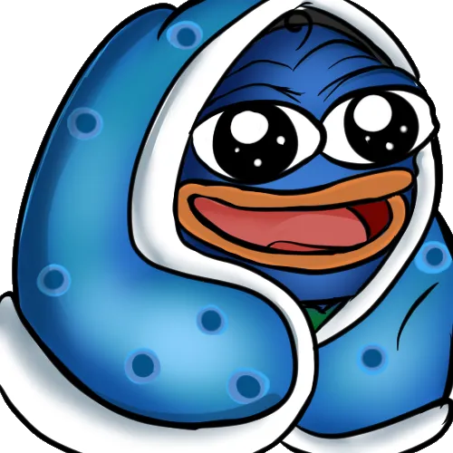
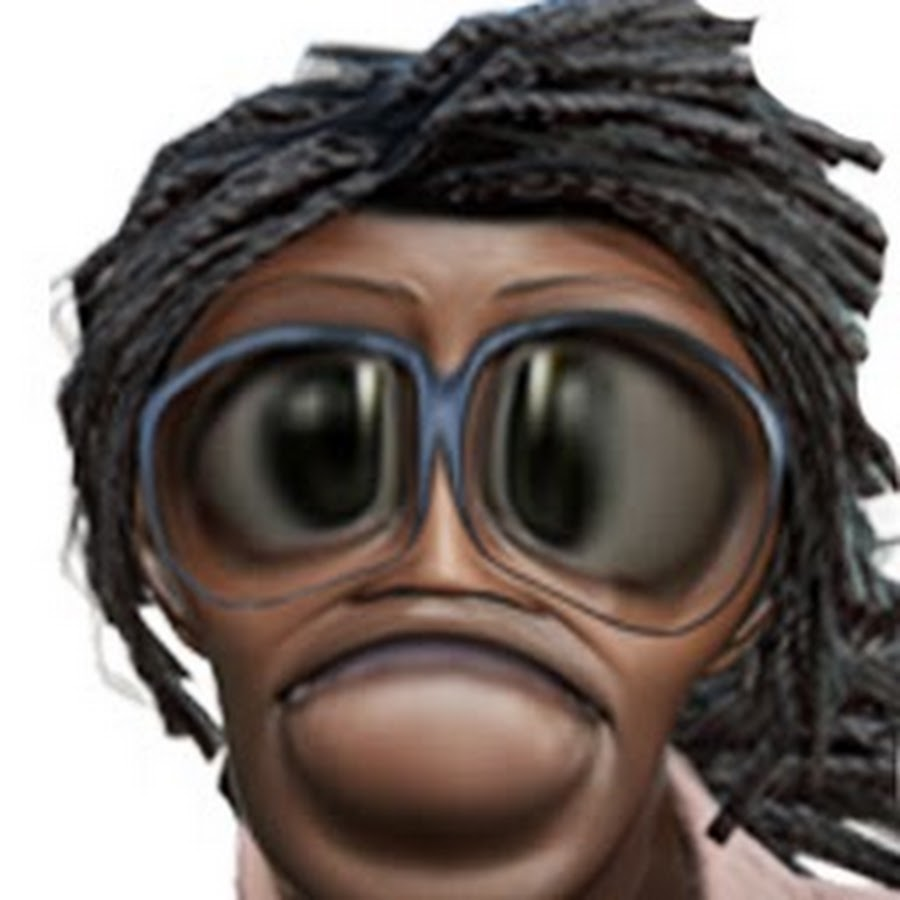
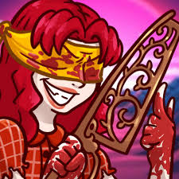
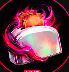

Lobby
Perks
Randomizer
Challenges
Killer Wheel
Creators
Special Thanks to
YatoTheMad
The Killer Strategist
leongrayj
Meta Build Specialist
Kala-aKaar Gaming
Hinglish Variety Streamer
itswhitesugar
Community Entertainer
The
Influencers
Of The Fog

Hens333
Competitive Master
Top Meta Analyst
Otzdarva
The Strategist
Most Respected Creator
Mr Tatorhead
Educational Survivor
No Perks Since 2020

TheJRM
Survivor Entertainer
Looping Specialist
Ayrun
Elite Survivor
Movement King
TrU3Ta1ent
Macro Analyst
Competitive Veteran
SpookyLoopz
Chill Creator
Good Vibes
OhTofu
Veteran Creator
Trusted Teacher
YatoTheMad
Killer Strategist
Build Analyst
itswhitesugar
Community-Driven Entertainer
Interactive Streamer

Laculan
Elite Killer
Nurse Mastery

BitzTheToaster
The Chaotic Toaster
Good Vibes & Chaos
leongrayj
Meta Build Specialist
Survivor Main
Kala-aKaar Gaming
Hinglish Variety Streamer
Entertaining Gameplay
×
Known For
Community Reputation
Build Requests